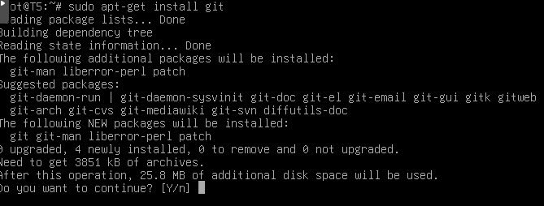
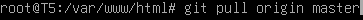

¿Qué son Git-GitHub?
Git es un software libre que se utiliza para llevar un control de las versiones de tu proyecto, en el que puedes guardar, volver a la versión guardada y actualiza. Git es un software de control de versiones diseñado por Linus Torvalds, que se utiliza para llevar un control de las versiones de tu proyecto cuando éstas tienen un gran número de archivos de código fuente.
Entre las principales características de Git, se encuentran las siguientes:
- Rapidez en la gestión de ramas y mezclado de diferentes versiones. Git incluye herramientas específicas para navegar y visualizar un historial de desarrollo no lineal.
- Git le da a cada programador una copia local del historial del desarrollo entero, y los cambios se propagan entre los repositorios locales.
- Los cambios se importan como ramas adicionales y pueden ser fusionados en la misma manera que se hace con la rama local.
- Gestión eficiente de proyectos grandes, dada la rapidez de gestión de diferencias entre archivos, entre otras mejoras de optimización de velocidad de ejecución.
- Todas las versiones previas a un cambio determinado, implican la notificación de un cambio posterior.
- Realmacenamiento periódico en paquetes (ficheros). Esto es relativamente eficiente para escritura de cambios y relativamente ineficiente para lectura si el reempaquetado (con base en diferencias) no ocurre cada cierto tiempo.
GitHub es una plataforma creada para facilitar el desarrollo colaborativo de software, permite alojar proyectos en la web gratuitamente, por lo general de forma pública, aunque se puede alojar los proyectos de modo provado, pagando una pequeña suscripción mensual.
Entre las principales características de GitHub, se encuentran las siguientes:
- Saber dónde obtener información sobre git.
- Conocer el estado e historial de nuestros proyectos.
- Modificar y recuperar estados anteriores.
- Solucionar conflictos entre repositorios.
¿Cómo instalar Git-GitHub?
Lo primero que tenemos que hacer es registrarnos en la página de GitHub
- Primero nos registramos rellenando con nuestros datos.
- Elegimos el plan "Free", sin coste. Esta opción permite compartir globalmente el proyecto. Si quisiesemos que el proyecto fuese privado, tendríamos que pagar una suscripción.
Para instalar Git, nos dirigiremos al servidor Ubuntu y abriremos la terminal. Una vez ahí, ejecutaremos los siguientes comandos:
- El primer paso es instalar Git. sudo apt-get install git 
- Una vez instalado, nos situamos en el directorio donde queramos alojar el proyecto. cd /var/www/html Iniciamos Git en ese directorio. git init
- Asignamos nuestro repositorio creado posteriormente en GitHub. git remote add origin https://github.com/Talde5/RetoWiki.git
- Ahora debemos identificarnos como si estuviesemos en GitHub. git config --global user.mail Talde5eusk@gmail.com
- Ahora procederemos a subir los archivos a GitHub. git add .
- Ahora le ponemos un nombre a la copia. git commit -m "nombre"
- Por ultimo subimos la copia a GitHub. git push -u origin master Nos pedira el nombre de usuario: Talde5 Nos pedira la contraseña: Euskera2018_
- Para descargarnos el proyecto, una vez esté ya subido a GitHub. git pull origin master 
-
En este video se realiza el proceso desde 0.
¿Qué requisitos necesitamos?
- Linux kernel version 2.4 o posterior, glibc2 version 2.3.2 o posterior (inicio con OOo 3.3 glibc2 version 2.5 o mayor) 256 Mbytes RAM (512 MB recomendado)
- Espacio de disco de 400 Mbytes
- X-Server con 1024 x 768 o mayor resolucion con 256 colores